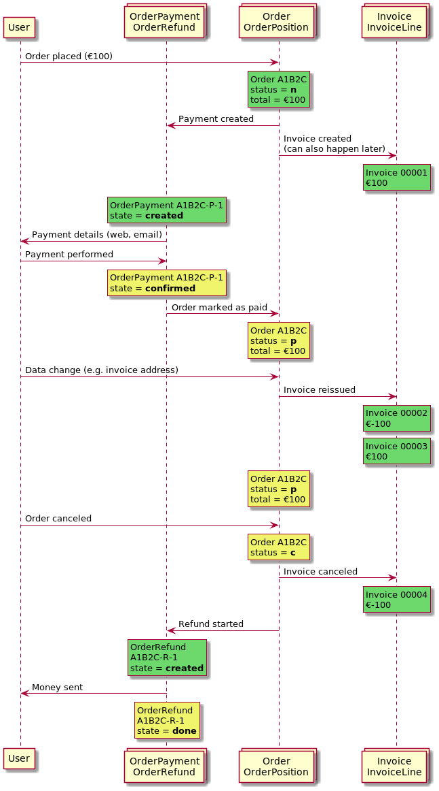

Understanding the life cycle of orders¶
When integrating pretix with other systems, it is important that you understand how orders and related objects such as order positions, fees, payments, refunds, and invoices work together, in order to react to their changes properly and map them to processes in your system.
Order states¶
Generally, an order can be in six states. For compatibility reasons, the status field only allows four values
and the two remaining states are modeled through the require_approval field and the number of positions within
an order. The states and their allowed changes are shown in the following graph:

Object types¶
- Order
One order represents one purchase. It’s the main object you interact with and bundles all the other objects together. Orders can change in many ways during their lifetime, but will never be deleted (unless
testmodeis set totrue).- Order position
An order position represents one product contained in the order. Orders can usually have multiple positions. There might be a parent-child relation between order positions if one position is an add-on to another position. Order positions can change in many ways during their lifetime, and can also be removed or added to an order.
- Order fees
A fee represents a charge that is not related to a product. Examples include shipping fees, service fees, and cancellation fees. Order fees can change in many ways during their lifetime, and can also be removed or added to an order.
- Order payment
An order payment represents one payment attempt with a specific payment method and amount. An order can have multiple payments attached. Order payments have their own state diagram. Apart from their state and their meta information (e.g. used credit card, …) they usually don’t change. They may be added at any time, but will never be deleted.
- Order refund
An order payment represents one refund attempt with a specific payment method and amount. An order can have multiple refunds attached. Order refunds have their own state diagram. Apart from their state and their meta information (e.g. used credit card, …) they usually don’t change. They may be added at any time, but will never be deleted.
- Invoice
An invoice represents a legal document stating the contents of an order. While the backend technically allows to update an invoice in some situations, invoices are generally considered immutable. Once they are issued, they no longer change. If the order changes substantially (e.g. prices change), an invoice is canceled through creation of a new invoice with the opposite amount, plus the issuance of a new invoice.
Here’s an example of how they all play together:
